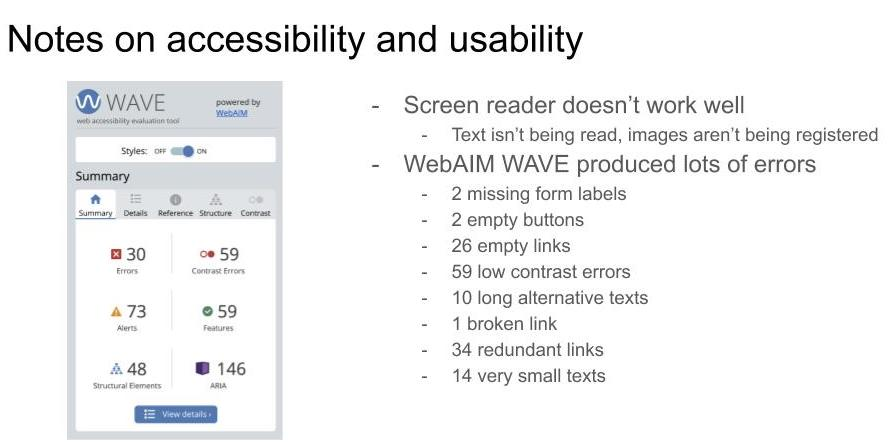

For this project, I redesigned the homepage for Edgar's Bakery: a pastry shop in my hometown that my high school friends and I liked visiting. I created lo-fi wireframes in Balsamiq, hi-fi prototypes in Adobe XD, and a responsive site implementation in HTML/CSS/JavaScript.
Here's the interactive website.
First, I identified interface issues with the original website interface (original website here). These were the four criteria I measured:
Here were my main findings:
I also used WebAIM WAVE and my computer's built-in screenreader to detect accessibilty issues.
After critiquing the original website, I created three low-fidelity wireframes (desktop, tablet, and mobile views) to address key usability issues.
Using the wireframes as a basis, I then created a set of high-fidelity prototypes (desktop, tablet, and mobile views) to emulate a website. Here's the link to the full prototypes.
While developing the high-fidelity prototypes, I also created a UI design style guide to display the main color palette, specify typography, and illustrate visual states for each interactive element.
Finally, I coded the newly-designed homepage in HTML/CSS/JavaScript. For this section, I utilized Chrome Developer Tools to ensure responsiveness across desktop, tablet, and mobile views.
Here's the link to the responsive webapge. All images and content are from the original Edgar's Bakery website here.
Overall, this project taught me how to approach UX design in a methodical, step-by-step process. Each stage gave me a deeper understanding of the original interface, and I've realized the value of lo-fi wireframing for brainstorming and hi-fi prototyping for development. I liked how this project was an exercise in both coding and design, and I especially liked working with Chrome Developer Tools.